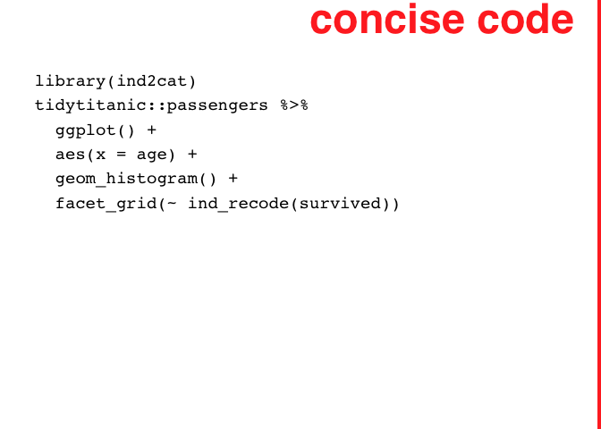
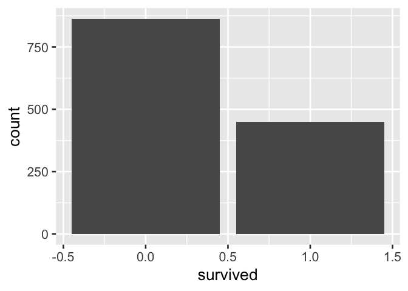
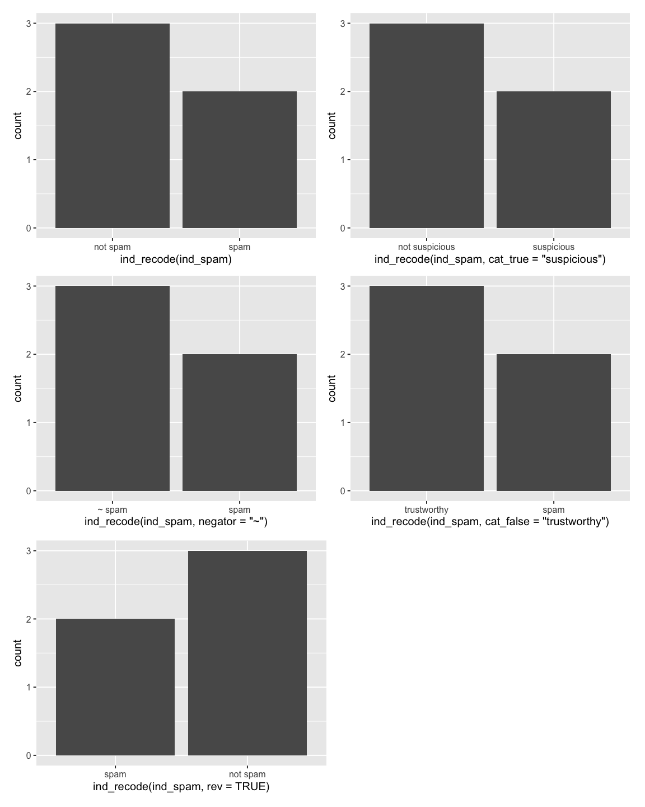

Introducing ind2cat::ind_recode()!
ind2cat::ind_recode is a concise, sensible function for making human-readable data summary products with indicator variables!


Abstract
Indicator variables are easy to create, store, and interpret [@10.1177/1536867X19830921]. They concisely encode information about the presence of a condition for observational units. The variable name encapsulates the information about the condition of interest, and the variable’s values (TRUE and FALSE, 1 or 0, “Yes” or “No”) indicate if the condition is met for the observational unit. When using indicator variables to use in summary products, analysts often make a choice between using an indicator variable as-is or crafting categorical variables where values can be directly interpreted. Using the indicator variable as-is may be motivated by time savings, but yields poor results in summary products. {{ind2cat}} can help analysts concisely translate indicator variables to categorical variables for reporting products, yielding more polished outputs. By default, ind2cat creates the categorical variable from the indicator variable name, resulting in a light-weight syntax.
Introduction
Using current analytic tools, analysts make a choice between directly using indicator variables or recoding the variable first to categorical. Current procedures for recoding indicator variables to a categorical variable is repetitive, but forgoing a recode and using indicator variables directly yields hard-to-interpret summary products.
The data below inspired by email training data, demonstrates how an analyst might current recode an indicator variable. This method is repetitive; in the recoding line, ‘spam’ is typed four times.
library(tidyverse)
data.frame(ind_spam = c(TRUE, TRUE, FALSE, FALSE, TRUE)) %>%
mutate(cat_spam = ifelse(ind_spam, "spam", "not spam"))
#> ind_spam cat_spam
#> 1 TRUE spam
#> 2 TRUE spam
#> 3 FALSE not spam
#> 4 FALSE not spam
#> 5 TRUE spamLikewise, in data visualization products where recoding can be done on the fly, we see that the process can be repetative.
tidytitanic::passengers %>%
ggplot() +
aes(x = age) +
geom_histogram() +
facet_grid(~ ifelse(survived,
"survived",
"not survived")) Furthermore, the ifelse() approach to recoding indicator variables also has the disadvantage of not consistently ordering the resultant categories; ordering in products will be alphabetical and not reflect the F/T order of the source variable. An additional step to reflect the source variable, using a function like forcats::fct_rev, may be required for consistent reporting. We show this with another visualization example, and see that the specification of the x axis variable becomes more difficult to reason about.
data.frame(ind_grad = c(T, F, T, T)) %>%
ggplot() +
aes(x = fct_rev(ifelse(ind_grad, "grad", "not grad"))) +
geom_bar()Given how verbose recoding an indicator variable can be, analysts may choose to forego a recoding the variable, especially in exploratory analysis. However, when indicator variables are used directly in data summary products like tables and visuals, information is often awkwardly displayed and is sometimes lost. Below, the table that is created by using the indicator variable directly is awkward to interpret. The indicator variable name persists in the output allowing savvy readers to interpret the output, but communication is strained.
tidytitanic::passengers %>%
count(survived)
#> survived n
#> 1 0 863
#> 2 1 450In the following two-way table produced using an indicator variable directly with the popular janitor package, information is completely lost:
tidytitanic::passengers %>%
janitor::tabyl(sex, survived)
#> sex 0 1
#> female 154 308
#> male 709 142Likewise, in the following visual summary of the data, where an indicator variable is directly used, interpretation is awkward.

A. Bar labels + axis label preserves information but is awkward
Moreover, when indicator variables are used directly as faceting variable for plots produced by the popular ggplot2 library, information is lost and the plot is not directly interpretable.
tidytitanic::passengers %>%
ggplot() +
aes(x = age) +
geom_histogram() +
facet_grid(~ survived) D. Facetting directly on an indicator variable with popular ggplot2 results in information loss
Introducing ind2cat::ind_recode
The ind2cat::ind_recode() function uses indicator variable names to automatically derive human-readable, and appropriately ordered categories.
To clearly compare the new method, we reiterate the status quo with a toy example:
library(tidyverse)
data.frame(ind_graduated =
c(TRUE, TRUE, FALSE)) %>%
mutate(cat_graduated =
ifelse(ind_graduated,
"graduated",
"not graduated")) %>%
mutate(cat_graduated =
fct_rev(cat_graduated)
)
#> ind_graduated cat_graduated
#> 1 TRUE graduated
#> 2 TRUE graduated
#> 3 FALSE not graduatedBelow we contrast this with the use of ind2cat’s ind_recode function which avoids repetition by creating categories based on the indicator variable name. Using the the function ind_recode(), we can accomplish the same task shown above more succinctly:
library(ind2cat)
data.frame(ind_graduated =
c(TRUE, TRUE, FALSE)) %>%
mutate(cat_graduated =
ind_recode(ind_graduated)
)
#> ind_graduated cat_graduated
#> 1 TRUE graduated
#> 2 TRUE graduated
#> 3 FALSE not graduatedThe function ind_recode is flexible, and can recode from variable populated with TRUE/FALSE values as well as 1/0 or “Yes”/“No” (and variants ‘y/n’ for example).
Furthermore, while ind_recode default functionality allows analysts to move from its first-cut human-readable recode, it also allows fully customized categories via adjustment of the functions parameters.
If the category associated with ‘TRUE’ should be modified (default is based on the variable name), the cat_true may be used as follows. Note that the false category is generated from the TRUE category by default.
data.frame(ind_graduated = c(T,T,F)) %>%
mutate(cat_graduated = ind_recode(ind_graduated,
cat_false = "current"))
#> ind_graduated cat_graduated
#> 1 TRUE graduated
#> 2 TRUE graduated
#> 3 FALSE currentAlso, the default negator ‘not’ can be changed by setting the negator argument.
tibble(ind_grad = c(T,T,F)) %>%
mutate(cat_grad = ind_recode(ind_grad, negator = "~"))
#> # A tibble: 3 × 2
#> ind_grad cat_grad
#> <lgl> <fct>
#> 1 TRUE grad
#> 2 TRUE grad
#> 3 FALSE ~ gradIf the negative category should be independently specified, the cat_false argument can be set:
tibble(ind_grad = c("Y", "N")) %>%
mutate(cat_grad = ind_recode(ind_grad, cat_false = "enrolled"))
#> # A tibble: 2 × 2
#> ind_grad cat_grad
#> <chr> <fct>
#> 1 Y grad
#> 2 N enrolledAlso, if the derived category’s levels should be reversed, i.e. [1,0] instead of the default [0,1], rev can be set to TRUE.
tibble(ind_grad = c("yes", "no")) %>%
mutate(cat_grad = ind_recode(ind_grad, rev = TRUE)) %>%
mutate(cat_grad_num = as.numeric(cat_grad))
#> # A tibble: 2 × 3
#> ind_grad cat_grad cat_grad_num
#> <chr> <fct> <dbl>
#> 1 yes grad 1
#> 2 no not grad 2Finally, several indicator variable prefixes are automatically removed with the default setting, includeing ind_ and IND_. This behavior can be modified using the var_prefix argument.
tibble(dummy_grad = c(0, 0, 1, 1, 1 ,0 ,0)) %>%
mutate(cat_grad = ind_recode(dummy_grad,
var_prefix = "dummy_"))
#> # A tibble: 7 × 2
#> dummy_grad cat_grad
#> <dbl> <fct>
#> 1 0 not grad
#> 2 0 not grad
#> 3 1 grad
#> 4 1 grad
#> 5 1 grad
#> 6 0 not grad
#> 7 0 not gradUse in data products like figures and tables
In the summary figure, we show the values that result from using ind_recode on the fly in ggplot2. In a true-to-life analytic reporting space, the analyst could then use labs(x = NULL) to remove the variable recoding specification.
data.frame(ind_spam = c(TRUE, TRUE, FALSE, FALSE, FALSE)) %>%
ggplot() +
aes(x = ind_recode(ind_spam)) +
geom_bar() +
theme_gray(base_size = 15)->
p1
p1 +
aes(x = ind_recode(ind_spam, cat_true = "suspicious")) ->
p2
p1 +
aes(x = ind_recode(ind_spam, negator = "~")) ->
p3
p1 +
aes(x = ind_recode(ind_spam, cat_false = "trustworthy")) ->
p4
p1 +
aes(x = ind_recode(ind_spam, rev = TRUE)) ->
p5
library(patchwork)
(p1 + p2) /
(p3 + p4) /
(p5 + patchwork::plot_spacer())
tidytitanic::passengers %>%
mutate(cat_survived = ind_recode(survived,
cat_false = "perished")) %>%
janitor::tabyl(sex, cat_survived) %>%
janitor::adorn_percentages() %>%
janitor::adorn_pct_formatting() %>%
janitor::adorn_ns(position = "rear")
#> sex perished survived
#> female 33.3% (154) 66.7% (308)
#> male 83.3% (709) 16.7% (142)Implementation details
readLines("R/ind_recode.R") -> implementation
#' ind_recode
#'
#' @param var the name of an indicator variable
#' @param var_prefix a character string that will be ignored when creating the categorical variable
#' @param negator a character string used to create cat_false when cat_false is NULL, default is 'not'
#' @param cat_true a character string string to be used place of T/1/"Yes" for the categorical variable output, if NULL the category is automatically generated from the variable name
#' @param cat_false a character string string to be used place of F/0/"No" for the categorical variable output, if NULL the category is automatically generated from the cat true and the negator
#' @param rev logical indicating if the order should be reversed from the F/T ordering of the indicator source variable, default is FALSE
#'
#' @return
#' @export
#'
#' @examples
#' library(tibble)
#' library(dplyr)
#' tibble(ind_grad = c(0,0,1,1,1 ,0 ,0)) %>%
#' mutate(cat_grad = ind_recode(ind_grad))
#'
#' tibble(ind_grad = c(TRUE,TRUE,FALSE)) %>%
#' mutate(cat_grad = ind_recode(ind_grad))
#'
#' tibble(ind_grad = c("Y", "N")) %>%
#' mutate(cat_grad = ind_recode(ind_grad))
#'
#' tibble(ind_grad = c("y", "n")) %>%
#' mutate(cat_grad = ind_recode(ind_grad))
#'
#' tibble(ind_grad = c("yes", "no")) %>%
#' mutate(cat_grad = ind_recode(ind_grad))
ind_recode <- function(var, var_prefix = "ind_", negator = "not",
cat_true = NULL, cat_false = NULL, rev = FALSE){
if(is.null(cat_true)){
cat_true = deparse(substitute(var)) %>% # use r lang in rewrite
stringr::str_remove(paste0("^", var_prefix)) %>%
stringr::str_replace_all("_", " ")
}
if(is.null(cat_false)){
cat_false = paste(negator, cat_true)
}
# for yes/no case - dangerously.
if(is.character({{var}})){
my_var <- {{var}} %>% as.factor() %>% as.numeric() - 1
}else{
my_var <- {{var}}
}
if(rev){
ifelse(my_var, cat_true, cat_false) %>%
factor(levels = c(cat_true, cat_false))
}else{
ifelse(my_var, cat_true, cat_false) %>%
factor(levels = c(cat_false, cat_true))
}
}README.Rmd chunks names
knitr::knit_code$get() |> names()
#> [1] "setup"
#> [2] "unnamed-chunk-1"
#> [3] "unnamed-chunk-2"
#> [4] "sqrecode"
#> [5] "unnamed-chunk-3"
#> [6] "introduce_ind2cat"
#> [7] "unnamed-chunk-4"
#> [8] "unnamed-chunk-5"
#> [9] "manipulation_status_quo"
#> [10] "visual_status_quo"
#> [11] "visual_status_quo_order"
#> [12] "direct_table_awkward"
#> [13] "direct_table_loss"
#> [14] "direct_visual_awkward"
#> [15] "direct_visual_loss"
#> [16] "manipulation_status_quo_reprise"
#> [17] "manipulation_ind2cat"
#> [18] "manipulation_ind2cat_custom"
#> [19] "manipulation_ind2cat_negator"
#> [20] "manipulation_ind2cat_false_cat"
#> [21] "manipulation_ind2cat_rev"
#> [22] "manipulation_ind2cat_prefix"
#> [23] "visual_ind2cat_customization_in_visualizations"
#> [24] "table_ind2cat_preserves"
#> [25] "read_in_function"
#> [26] "display_function"
#> [27] "get_chunk_names"